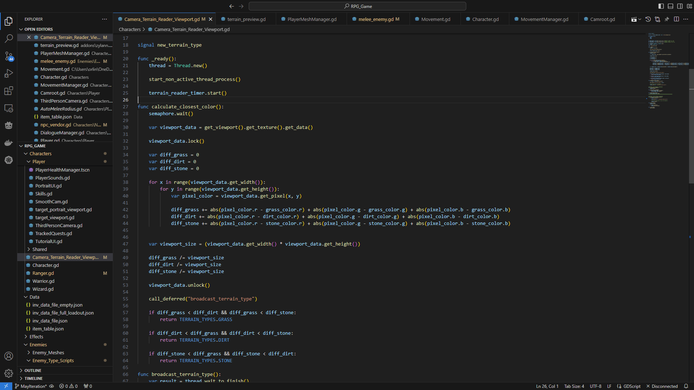

Fantasy ARPG Game
All screenshots are from the original version built using Godot 3.5+. I am currently in the
process of porting over to version 4+
Testing town
Outside View
Accepting a Quest
Quest Log View
Chest Looting - Bow Item
Bow Equip & UI State Updates
Vendor View
Vendor Item ToolTip
Looting slain enemies - Pulls in all nearby loot
Graphics Settings

Controls & Input Settings
Ingame Pause Menu
Saving & Loading
Character Class Selection
Character Finalize
Save Game Logic
Target Cycling
Thread Management - Processing Complex Calculations


Looting Sequence Logic
Attack Input Logic
Auto Melee on Attack Input
Summary of Systems
This list does not cover every system I built, but a highlight of the major systems that
were created.
- Character In-game UI/UX - Player details, pausing, equipment, quests, and inventory
- Animation system - Animate differently based on the type of weapon being held while
interacting with the world.
Dynamic call method loading during compile time.
- Gear Management - Ability to equip, unequip, store gear pieces to either sell or obtain to
wear. All gear changes would display on character.
- Responsive Movement - Instant character feedback the moment an input is pressed.
- Advanced Movement & Combat - Crouching, sprinting, dodging, attack comboing, and blocking.
- Smart Combat - Attack the closest target when attacking, block the closest target, and target cycling(tabbing) targeting.
- Enemy AI States - Respond differently based on the player actions and reset after a delay
- World Creation - Water shadars for rivers and waterfalls. Experimenting with general optimizing techniques while
facing open-world challenges towards performance
- Saving & Loading - Locally storing save files and retrieving to load where you left off.
- NPC Questing - Quest system incorpating dialogue, chaining, tracking, and completion.
- World Looting - Ability to loot containers and enemies.
- Character Progression - Obtaining gear, gold, fame, skill and level progression.
An extensive amount of 3D modeling was done as well, mainly towards character creation and animation.